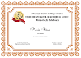

ESPECIALISTA EM NUTRIÇÃO
O Título de Especialista em Nutrição é o reconhecimento da capacitação técnica e científica dos profissionais. A prova de título valoriza o conhecimento e a atuação nas especialidades da área de Nutrição.
